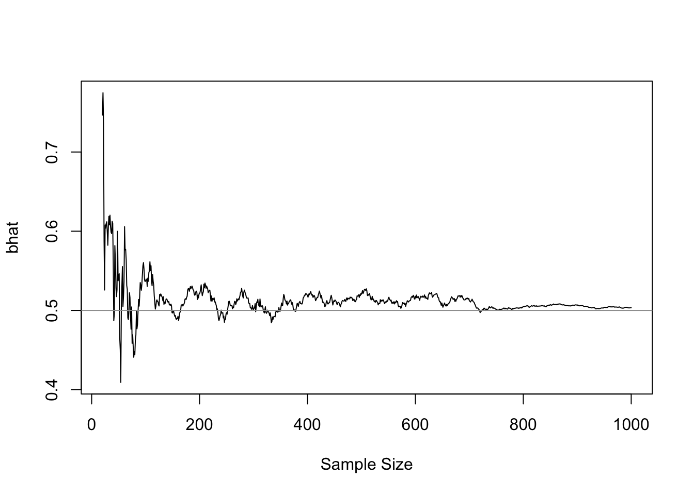
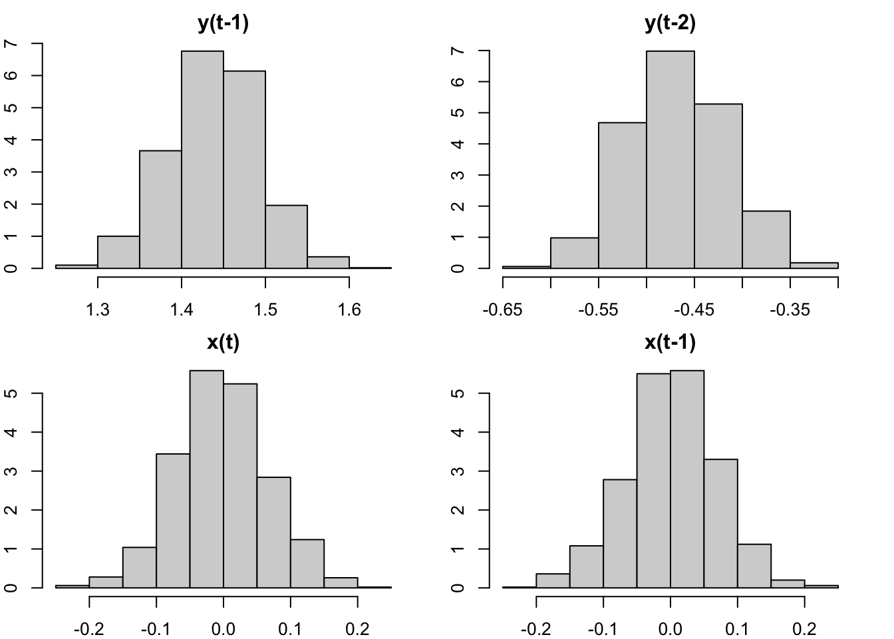

24 Cointegration
We have shown that regressing on non-stationary time series might lead to spurious regressions that produce nonsensible large \(t\)-values. The conventional asymptotic theorems no longer hold for series with very high persistence such as unit root processes. But unit roots are not always an enemy, sometimes it can be a friend, as in the case of cointegration. In this case, the OLS estimates are super-consistent. They are consistent even when there is an endogeneity issue (which is amazing!)
24.1 Cointegration and super-consistency
Consider a regression with two random walks \(x_t\) and \(y_t\):
\[ y_t = \beta x_t + e_t \]
where \(e_t\) is stationary. In this case, \(y_t\) and \(x_t\) are cointegrated, because the linear combination of the two \(I(1)\) processes becomes \(I(0)\). If this is the case, we no longer have a spurious regression. In fact, \(\hat\beta\) is not only consistent, but super-consistent. Consider the OLS estimator
\[ T(\hat\beta -\beta) = \frac{T^{-1}\sum x_t e_t}{T^{-2}\sum x_t^2} \to \frac{\int W_1 dW_2}{\int W_1^2 dt}. \]
Note that \(\int W_1 dW_2\) is centered at zero. Hence \(\hat\beta\) is consistent, despite the distribution is non-Gaussian. It converges at rate \(T\), faster than the standard case \(\sqrt T\). So it is called super-consistency.
The argument extends to general regressions with multiple regressors. As long as there exists a vector of coefficients that makes the non-stationary variables cointegrated, the OLS estimator is super-consistent. For example,
\[ y_t = \phi y_{t-1} + \beta x_t + e_t \]
If \(y_t\) is \(I(1)\), then \(y_t - y_{t-1}\) is \(I(0)\) (cointegrated with itself). Therefore, \([0, 1]\) is the cointegration vector that makes \(e_t\) stationary even if \(x_t\) is not cointegrated with \(y_t\). In this case, OLS estimates for \(\hat\rho\) and \(\hat\beta\) will be super-consistent.
The intuition of super-consistency is that OLS minimizes squared residuals. If the coefficients deviate from the cointegration vector, \(\hat e_t^2\) would diverge. \(\hat e_t^2\) is minimized only when the coefficients coincide with the cointegration vector. That makes OLS converges even faster.
The super-consistency is so strong, that the OLS estimators for cointegrated variables are consistent even when there is endogeneity problem. We demonstrate this with an example. Suppose \(x_t\) follows a random walk, and \(y_t\) cointegrates with \(x_t\):
\[ \begin{aligned} x_t &= x_{t-1} + u_t \\ y_t &= \beta x_t + e_t \end{aligned} \]
Assume \(u_t\) and \(e_t\) are correlated with \(\mathbb E (e_t^2)=\mathbb E (u_t^2)=1\) and \(\text{cov}(e_t,u_t)=1\). For simplicity, also assume \(e_t = \phi u_t + \sqrt{1-\phi^2}\eta_t\) where \(\eta_t\) is \(iid\) standard normal. As \(e_t\) is correlated with \(x_t\) through \(u_t\), there is clearly an endogeneity problem. The OLS estimator is given by
\[ T(\hat\beta-\beta) = \frac{\frac{1}{T}\sum x_t e_t}{\frac{1}{T^2}\sum x_t^2} = \frac{\frac{1}{T}\sum x_{t-1} e_t + \frac{1}{T}\sum u_t e_t}{\frac{1}{T^2}\sum x_t^2} \]
where
\[ \begin{aligned} \frac{1}{T}\sum x_{t-1} e_t &= \frac{\phi}{T}\sum x_{t-1} u_t + \frac{\sqrt{1-\phi^2}}{T}\sum x_{t-1} \eta_t \\ &\to \phi\int W_1 dW_1 + \sqrt{1-\phi^2}\int W_1 dW_2 \end{aligned} \]
Therefore,
\[ T(\hat\beta-\beta) \to \frac{\phi\int W_1 dW_1 + \sqrt{1-\phi^2}\int W_1dW_2+\phi}{\int W_1^2 dt}. \]
When \(\phi\neq 0\), that is endogneity exists, the limiting distribution is shifted. As a result \(\hat\beta\) has a finite sample bias of order \(\frac{1}{T}\). But as \(T\to\infty\), the estimator is consistent. Figure 24.1 demonstrates the convergence of \(\hat\beta\) as sample size increases (the true \(\beta=0.5\)).
24.2 Inference under cointegration
We have seen the limiting distributions of persistent regressors could be non-standard. But luckily, in many cases, we can still get Gaussian distributions. This is hard to believe. But it can be shown. Consider a regression of the canonical form — that is a regression with four types of regressors: stationary \(I(0)\), non-stationary \(I(1)\), constant and trend. It can be shown any regression can be rewritten in the canonical form.
\[ y_t = \boldsymbol{\gamma z_t} + e_t \] where
\[ \boldsymbol z_t = \begin{bmatrix} F_1(L) & 0 & 0 & 0 \\ 0 & 1 & 0 & 0 \\ F_2(L) & G & H & 0 \\ F_3(L) & T & K & 1 \end{bmatrix} \begin{bmatrix} \boldsymbol\epsilon_t \\ 1\\ \boldsymbol\eta_t \\ t \end{bmatrix} \]
and \(e_t\) is stationary. Consider the OLS estimator: \(\hat\gamma=\gamma + (Z'Z)'Z'e\) with a scaling matrix
\[ Q =\begin{bmatrix} \sqrt{T}\boldsymbol{I}_{k_1} & & & \\ & \sqrt{T} & & \\ & & T\boldsymbol{I}_{k_3} & \\ & & & T^{3/2} \end{bmatrix} \]
Multiply them together,
\[ \begin{aligned} Q(\hat\gamma - \gamma) &= (Q^{-1}Z'ZQ^{-1})^{-1} Q^{-1}Z'e \\ &= \begin{bmatrix} \underset{k_1\times k_1}{\text{const}} & 0\quad 0\quad 0 \\ 0 & \text{Functions of} \\ 0 & \text{Brownian} \\ 0 & \text{motions} \\ \end{bmatrix}^{-1} \begin{bmatrix} N(0,?)\\ N(0,?)\\ ?\int W dW ?\\ N(0,?) \end{bmatrix} \end{aligned} \]
We don’t care the specific functional forms of the converged distribution. What matters is the speed of convergence. Note that
\[ \begin{aligned} \sqrt{T}(\hat\gamma_1-\gamma_1) &\to N(0,?) \\ \sqrt{T}(\hat\gamma_2-\gamma_2) &\to \text{Something 2} \\ T(\hat\gamma_3-\gamma_3) &\to \text{Something 3} \\ T^{3/2}(\hat\gamma_4-\gamma_4) &\to \text{Something 4} \end{aligned} \]
Constant and stationary regressors have the slowest converging speed \(\sqrt T\). Only stationary regressors converge to Gaussian distribution.
Now consider a general regression,
\[ y_t = \boldsymbol{\beta x_t} + e_t \]
where \(e_t\) is stationary. Sims (1990) shows that we can always find a linear combination \(\boldsymbol{Dx_t=z_t}\) that transforms the regression into a canonical form
\[ y_t = \boldsymbol{\gamma z_t} + e_t \]
where \(\boldsymbol{\gamma=\beta D^{-1}}\). This means, if a component of \(\hat\beta\) can be written as a linear combination of \(\hat\gamma_1, \hat\gamma_3, \hat\gamma_4\), its distribution will be dominated by the behavior of \(\hat\gamma_1\) due to its slower convergence speed. As such, it will behave like asymptotic normal and converge at speed \(\sqrt T\).
In essence, the coefficients that can be represented as a linear combination involving stationary regressors will be asymptotically normal and converge at rate \(\sqrt T\). Consider an example,
\[ y_t = \alpha + \rho_1 y_{t-1} + \rho_2 y_{t-2} + \beta_1 x_t + \beta_2 x_{t-1} + e_t \]
where \(y_t\) and \(x_t\) are \(I(1)\). The regression can be rewritten as
\[ \begin{aligned} y_t &= \alpha + \rho_1\Delta y_{t-1} + (\rho_1+\rho_2)y_{t-2} + \beta_1\Delta x_t + (\beta_1+\beta_2)x_{t-1} + e_t \\ &= \alpha + \rho_1\Delta y_{t-1} + \lambda y_{t-2} + \beta_1\Delta x_t + \delta x_{t-1} + e_t \end{aligned} \]
in which, \(\rho_1\) and \(\beta_1\) are coefficients on stationary regressors, therefore converging to Gaussian; \(\rho_2=\lambda-\rho_1\) and \(\beta_2=\delta-\beta_1\) are linear combinations involving coefficients on stationary regressors, whose distributions will be dominated by that of \(\rho_1\) and \(\beta_1\). Hence, all coefficients will have asymptotically normal distributions. Standard inference applies. We verify the claim with a Monte Carlo simulation.
library(dynlm)
beta = sapply(1:1000, function(i) {
x = arima.sim(list(order=c(1,1,0),ar=.5), 200)
y = arima.sim(list(order=c(0,1,1),ma=.7), 200)
coef(dynlm(y ~ L(y,1:2) + L(x,0:1)))
}) |> t()
{
par(mfrow=c(2,2), mar=c(2,2,2,2))
hist(beta[,'L(y, 1:2)1'], freq=F, main="y(t-1)")
hist(beta[,'L(y, 1:2)2'], freq=F, main="y(t-2)")
hist(beta[,'L(x, 0:1)0'], freq=F, main="x(t)")
hist(beta[,'L(x, 0:1)1'], freq=F, main="x(t-1)")
}